Chromatic Failure
A VR experience about designing for colour blindness.
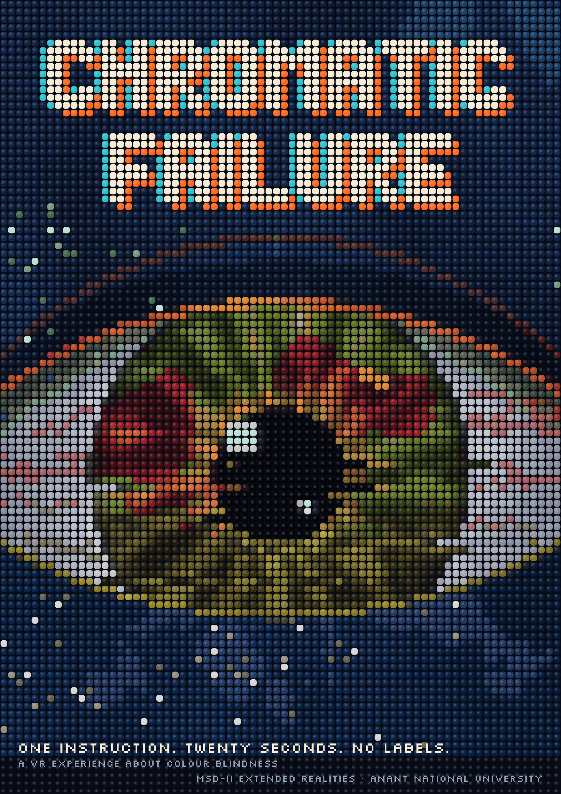
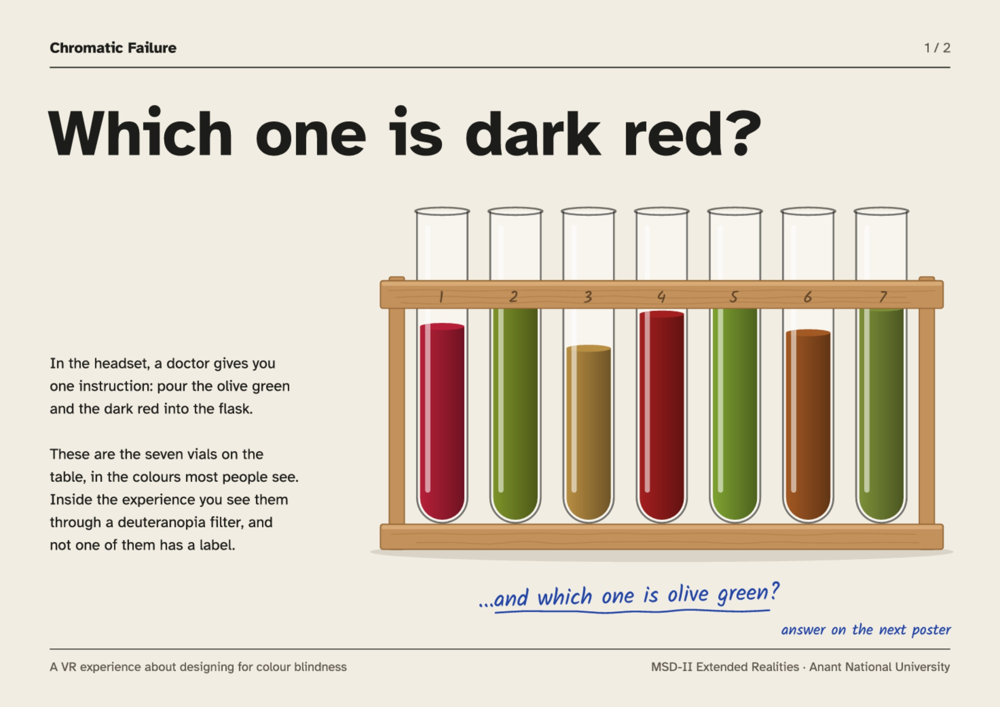
PROJECT DETAILS
Type: VR Experience (first-person simulation)
Role: Researcher, Interaction Designer, VR Prototyper
Team: Solo
Duration: 2 weeks
Context: MSD-II Extended Realities, Anant National University
Platform: VR (Meta Quest)
Simulation: Machado dichromacy matrices (deuteranopia)
A colour-normal user steps into a high-pressure lab where every critical task depends on colour alone. They will fail, and that failure is the experience. The colourblind person is not the problem. The design is.
See It in Action
THE CENTRAL ARGUMENT
Colour blindness is not an individual limitation. It is a systemic design failure. Every environment that relies on colour alone to communicate critical information has already excluded some of its users before they enter the room.
WHY I MADE IT
I am mildly red-green colourblind (deuteranomaly). I found out while preparing for the NID entrance exams, and it gave a pattern to years of struggling with colour palettes and needing help with graphics. It was never a personal failure. The systems I worked in were not designed with me in mind.
I wanted someone else to reach that realisation, not through sympathy for the colourblind, but through anger at the system that forgot them.
How the Concept Changed
The First Idea
A narrative mixed-reality piece. The user would follow characters through a story about daily life with colour blindness, aiming for empathy. It was more of a direction than a concept.
Why It Failed
Faculty feedback named two problems. Watching characters from the outside creates sympathy, not understanding. And I was designing about colourblind people without having spoken to any beyond myself.
The New Direction
A first-person simulation. Put the user inside a workplace with their colour perception shifted toward deuteranopia, and give them tasks only colour can solve. They fail, and the blame should land on the system.
Watching someone struggle creates sympathy. Being inside the situation creates understanding.
Primary Research
Three semi-structured online interviews with people diagnosed with deuteranomaly, the most common red-green deficiency. One was my roommate; I reached the other two by DM after finding their posts on r/ColorBlind. The conversations ran in Hinglish, were guided by five core questions, and are translated here. I was not looking for general awareness. I was looking for the moments where colour-only systems stop being an inconvenience and become a barrier.
Kunal, 23
Strong at form and space, but his colour work reads as off to peers and faculty. He has never disclosed his colour blindness at college, because saying it in a design school feels like admitting he doesn't belong.
"I have to manually check hex codes for something that should've just had a name written on it."
Workaround
- Hex codes
- Asking friends to check before submissions
Would redesign
- The grading rubric: add an icon or pattern beside its red, yellow and green
Nikhil, 24
Cleared the physical, written and aptitude rounds, then failed the Ishihara plates at his police medical. He had never noticed a problem before. One test ended a career he had wanted since childhood.
"That's not testing my ability to do the job. That's testing my ability to pass a colour test."
Workaround
- Reading position, not colour (the top light on a signal is red)
- Colour-blind lenses were not practical for uniform or training
Would redesign
- The medical test: make it practical, and grade by severity
Aditya, 21
Found out at his aviation medical that he can't tell roughly half of all greens apart, and was borderline disqualified. His daily life runs normally. One professional requirement stopped everything.
"Add a shape, add a label, add a pattern. I'm colourblind, not blind."
Workaround
- None needed day to day
Would redesign
- Cockpit instruments: pair every colour indicator with text or a symbol
Insights
When a system fails to accommodate, the individual absorbs the blame silently, and over time begins to believe it belongs to them.
It reveals: exclusion operates through silence, not confrontation.
Gatekeeping tools are designed once, inherited without question, and applied indefinitely, never mapped back to the work they claim to assess.
It reveals: systemic exclusion is held in place by unquestioned convention.
Colour-only systems are the anomaly in safety-critical design. The problem is not the colourblind person. It is a single channel of information with no redundancy.
It reveals: the exclusion is a choice. Alternatives exist but were never pursued.
WHAT ALL THREE SHARE
None of them is severely colourblind and all function normally day to day. They were excluded not by inability to do the work, but by systems designed without them and never revisited.
How Insights Became Design Decisions
1. Let the user fail before the reveal (from Kunal) Blame is internalised before the system is ever questioned, so the simulation cannot explain itself on entry. The user fails first, feels it personally, and only then sees why. The shame has to come before the realisation.
2. Zero redundancy, no labels (from Aditya) Aviation builds redundancy into every safety system except its colour-coding. So the lab has no labels, no symbols and no patterns. When the user looks for another way to read the information, there is nothing there. That absence is the argument.
3. The failure must feel unfair, not personal (from Nikhil) A twenty-second countdown removes the workarounds colourblind people rely on every day. The task feels completable, so the user does not feel stupid. They feel set up.
Together they work as a sequence: no explanation on entry, zero redundancy in the room, and a failure that feels like the system's fault. Kunal gave the psychological mechanism, Aditya the environmental logic, Nikhil the emotional target.
Secondary Research
This is not an edge case. The EnChroma workforce survey, the largest of its kind, found that nine in ten people with colour vision deficiency say identifying colours plays a role in their job, and over 20% cannot do certain work that needs accurate colour identification.
THE SIMULATION MODEL
Machado, Oliveira and Fernandes (2009) built a physiologically based model that handles both dichromacy and anomalous trichromacy. Most colour-deficient people are anomalous trichromats, so a fixed dichromacy simulation overstates what they see. All three participants have mild to moderate deuteranomaly, so this model lets the simulation match their severity instead of a worst case, which makes it harder to dismiss.
VR AS AN EMPATHY TOOL
Existing VR work, including the BlueVR serious game (ACM, 2023), simulates colour vision deficiency to build understanding, and mostly generates sympathy. This project asks a different question. Not "can you understand their experience?" but "why was this designed this way?"
THE STANDARD THAT ALREADY EXISTS
WCAG 1.4.1, a Level A requirement, prohibits using colour as the only means of conveying information. Electrical rooms, labs and cockpits break that principle routinely. The rule exists, the knowledge exists, and the exclusion continues anyway.
THE LIVED EXPERIENCE
A global study on PMC records the same gatekeeping in people's own words: "I wanted to be a pilot, but when I failed the colour vision test, I felt like a door had closed before I even had a chance to try." It mirrors Aditya's story almost exactly.
SOURCES
- Machado, Oliveira and Fernandes (2009), A Physiologically-based Model for Simulation of Color Vision Deficiency
- EnChroma Workforce Survey (2021)
- Bill Fischer (2023), Over 11 Million Jobs in the U.S. May Exclude Color-Blind Persons
- A Global Perspective of Color Vision Deficiency: Awareness, Diagnosis, and Lived Experiences (PMC)
- BlueVR: A Virtual Reality Serious Game for Promoting Understanding towards People with Color Vision Deficiency (ACM, 2023)
- Empathic Experiences of Visual Conditions with Virtual Reality (Springer, 2023)
- W3C, Understanding Success Criterion 1.4.1: Use of Color
- WebAIM, Contrast and Color Accessibility
Environment 1: The Operation Lab
The player walks into a lab. A doctor speaks over an intercom: a patient has chemical poisoning, and the fix is to combine the dark red and the olive green vials in the flask. Simple enough. Then they look at the bench.
The Instruction
A doctor's voice gives one clear instruction. The task is understood in seconds.
The Bench
Seven vials in near-identical reds and greens. No labels, no text, no symbols. The twenty-second countdown is already running.
The Failure
The wrong vials get mixed. Smoke, an alarm, and the doctor: "That's the wrong compound. The patient is getting worse." The monitor flatlines. Silence.
The Reveal
The screen goes dark. One line appears: "You had the right instruction. The vials had no labels. Why?"
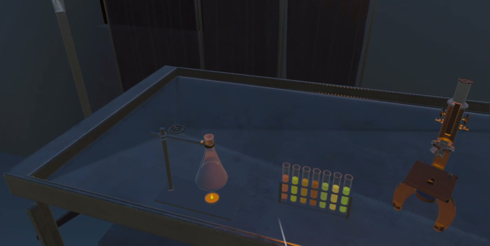
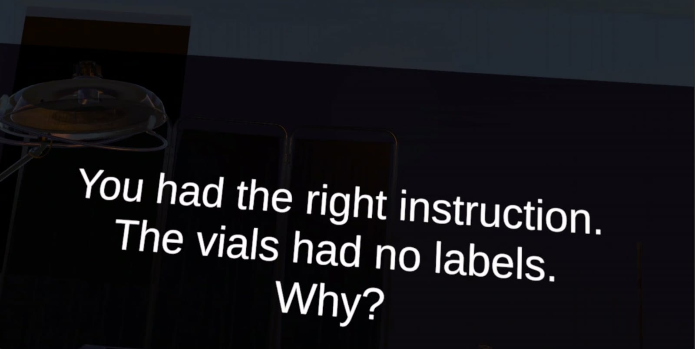
The lab is the first environment, and the one built so far. The same logic extends to an electrical room, with wires and indicator panels separated by colour alone, and to any other workplace that signals with colour only.
The Exhibit
The experience was shown as a small installation. Visitors put on a headset and headphones, play the lab, then meet the argument on the wall.
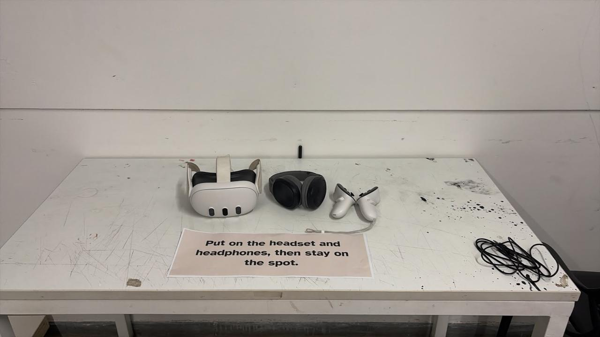
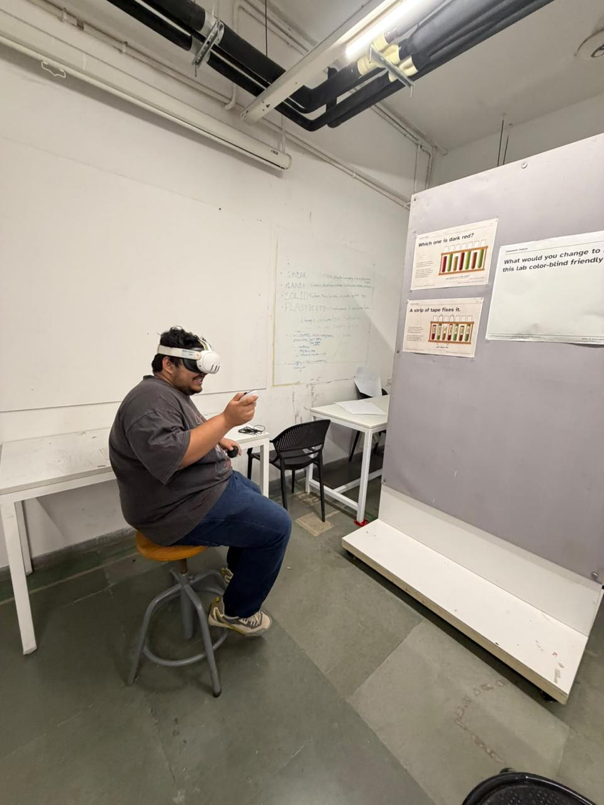
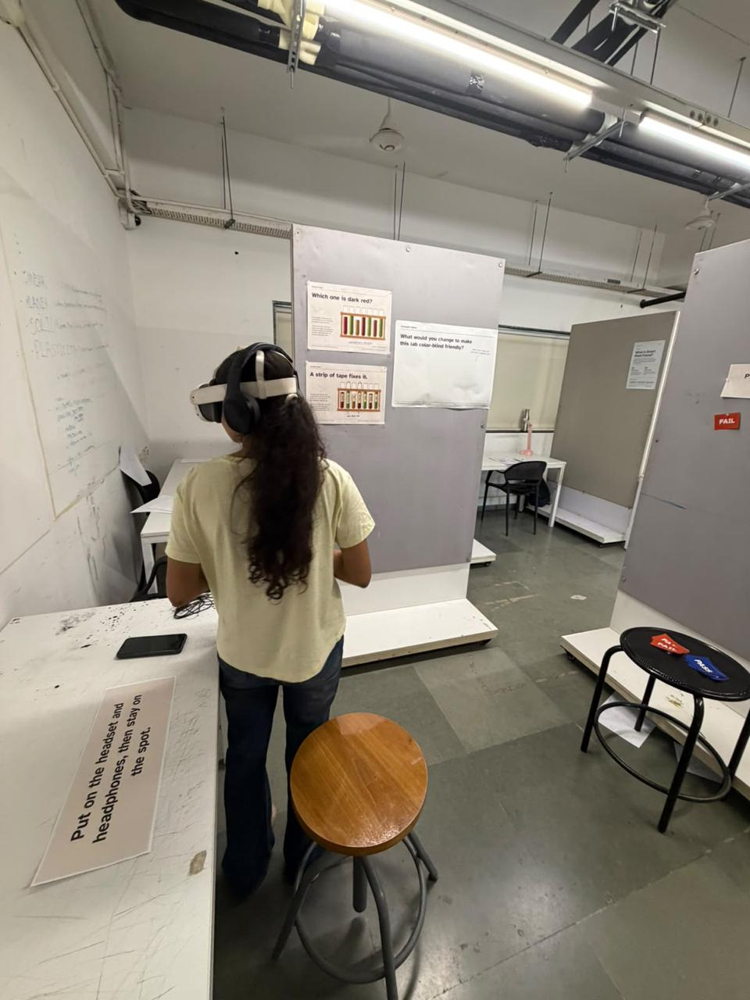
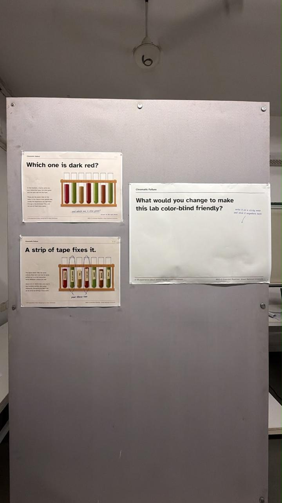
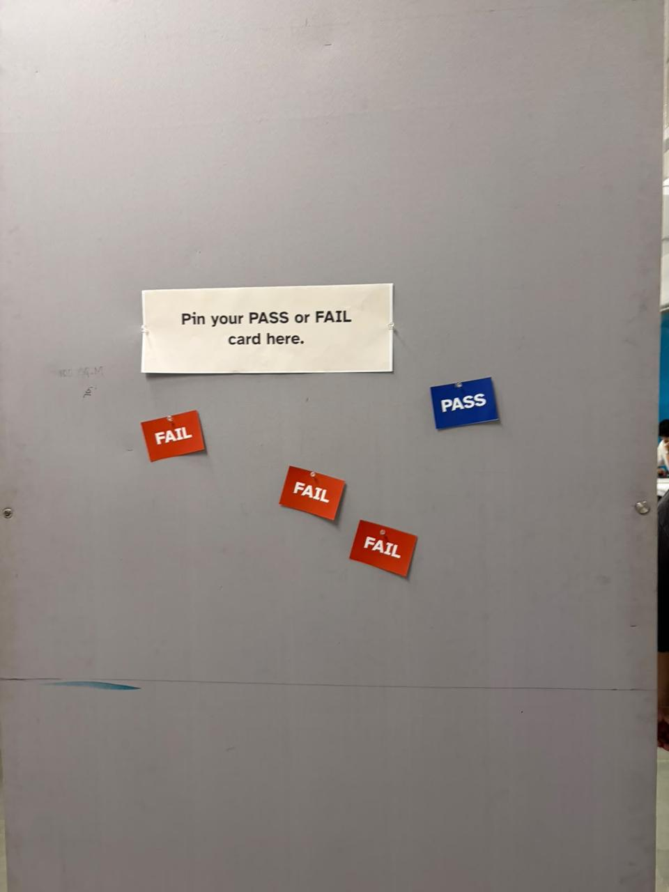
After playing, visitors pin a PASS or FAIL card to the board. A third poster asks what they would change to make the lab colour-blind friendly, and invites the answer on a sticky note stuck anywhere on the wall.
The Posters
Two posters tell the whole argument as a question and its fix. A third turns the lab over to the audience.
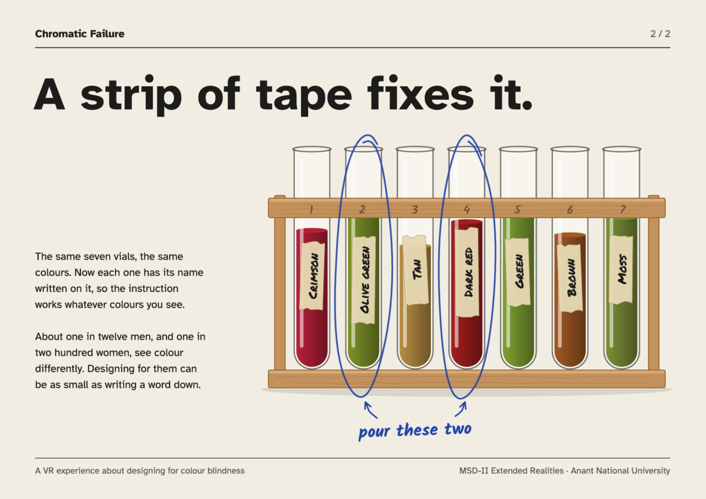
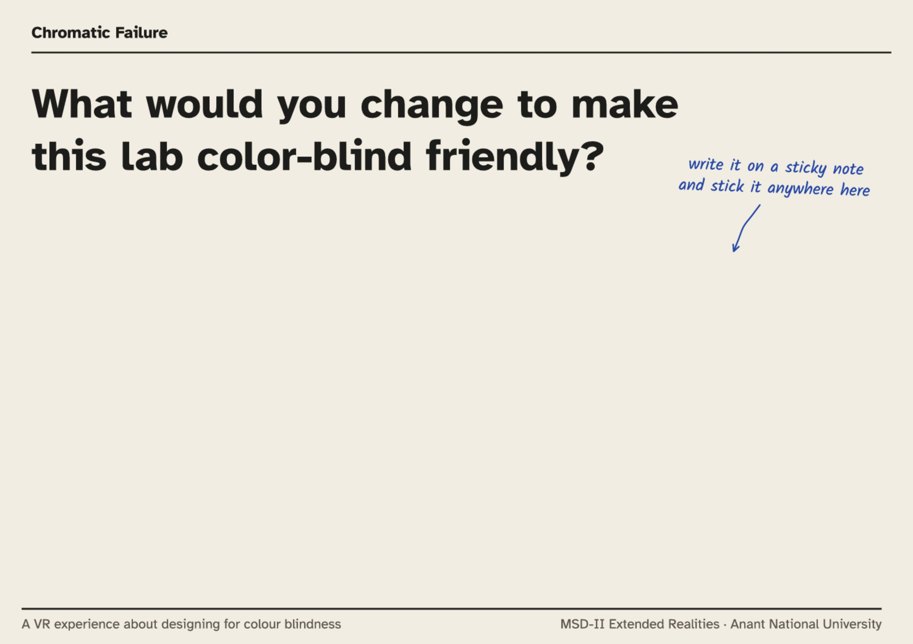
About one in twelve men, and one in two hundred women, see colour differently. Designing for them can be as small as writing a word down.
OUTCOME
A working VR prototype and exhibit that turn a colour-coded lab into an argument. Visitors fail a task that was never designed for everyone, then see that a strip of tape would have fixed it.
WHAT IS STILL OPEN
Does the redirect land? The core success criterion, that players blame the design and not themselves, has not been formally tested. The next step is a small round of prototype testing that asks every player straight after: who or what do you blame for the failure?
Why was it designed this way? I have not yet researched why labs, electrical rooms and cockpits were colour-coded in the first place, who decided, and whether that reasoning still holds. Understanding it would make the critique specific instead of general.
REFLECTION
"This project pushed the idea that colour blindness is a design failure, not a personal one. Instead of asking users to sympathise, it let them fail first, then showed them that a strip of tape would have fixed it."